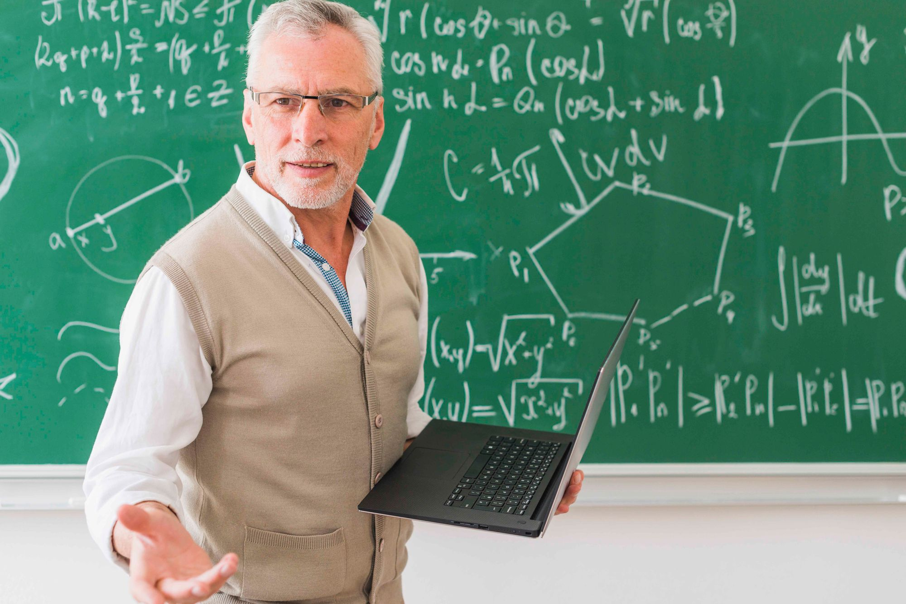

В современном мире математика — это не просто школьный предмет. Это основа критического мышления, аналитических способностей и успешного будущего. Но как помочь ребенку не просто выучить формулы, а полюбить математику и достичь высоких результатов? Ответ прост: качественное репетиторство.
Математика — больше, чем цифры
Многие родители ошибочно полагают, что репетитор нужен только для "подтягивания" отстающих учеников или подготовки к экзаменам. На самом деле, индивидуальные занятия с профессиональным педагогом дают гораздо больше:
- Развитие логического мышления — умение видеть причинно-следственные связи, анализировать информацию и принимать взвешенные решения
- Формирование алгоритмического подхода — способность разбивать сложные задачи на простые шаги, что пригодится в любой профессии
- Преодоление страха перед сложными задачами — уверенность в своих силах и готовность решать нестандартные проблемы
- Развитие концентрации и усидчивости — навыки, которые помогут в учебе и работе на протяжении всей жизни
Почему школа не всегда справляется?
Школьная программа рассчитана на "среднего" ученика. В классе из 25-30 человек учитель физически не может уделить достаточно внимания каждому. В результате:
- Одни ученики скучают, потому что им слишком легко
- Другие отстают, потому что не успевают за темпом
- Третьи теряют интерес из-за формального подхода
- Большинство не понимает, зачем им нужна математика в жизни
"Хороший репетитор — это не просто передача знаний. Это индивидуальный маршрут развития, адаптированный под особенности, темп и цели конкретного ученика."
Реальные результаты моих учеников
За 8 лет работы я накопил достаточно статистики, чтобы говорить о результатах объективно. Вот только несколько примеров:
- Анна, 11 класс: за 6 месяцев подготовки повысила результат ЕГЭ с 62 до 94 баллов. Поступила на бюджет в МФТИ
- Максим, 9 класс: после года занятий стал призером региональной олимпиады, хотя до этого математика была "нелюбимым" предметом
- Екатерина, студентка 1 курса: за 2 месяца ликвидировала задолженности по высшей математике, сейчас сдает сессии на отлично
- Дмитрий, 8 класс: преодолел "порог понимания" в алгебре, сейчас самостоятельно решает задачи повышенной сложности
Мифы о репетиторстве, в которые пора перестать верить
Миф 1: "Хорошему ученику репетитор не нужен"
Даже отличникам нужна систематизация знаний, разбор сложных тем и подготовка к олимпиадам. Многие мои ученики приходят с оценкой 5, но после диагностики выясняется, что есть пробелы, которые мешают идти дальше.
Миф 2: "Занятия с репетитором — это дорого и неоправданно"
Сравните стоимость занятий и возможные последствия: потерянный год при неудачной сдаче ЕГЭ, обучение на платном отделении, упущенные карьерные перспективы. Качественная подготовка — это инвестиция, которая окупается многократно.
Миф 3: "Можно подготовиться самостоятельно по видеоурокам"
Видеоуроки — отличное дополнение, но они не дают обратной связи. Репетитор видит ошибки, находит пробелы, корректирует программу. Это живой диалог, а не пассивное потребление информации.
Миф 4: "Репетитор нужен только перед экзаменами"
Чем раньше начать, тем лучше. Системные занятия с 7-8 класса позволяют сформировать прочную базу, без которой сложные темы старшей школы будут даваться с трудом. Подготовка за месяц до ЕГЭ — это стресс, а не эффективное обучение.
Как понять, что ребенку нужен репетитор?
Вот несколько признаков, которые нельзя игнорировать:
- 📉 Резкое снижение успеваемости или потеря интереса к предмету
- 😟 Страх перед контрольными и экзаменами, тревожность при решении задач
- 🔄 Непонимание связи между темами, "пробелы" в знаниях
- ⏰ Нехватка времени в школе для разбора сложных тем
- 🎯 Амбициозные цели — поступление в топовый вуз, участие в олимпиадах
Мой подход к обучению
За годы работы я выработал методику, которая дает стабильные результаты:
1. Диагностика и индивидуальный план
Первое занятие всегда бесплатное. Я провожу диагностику, выявляю сильные и слабые стороны, обсуждаю цели с учеником и родителями. Только после этого составляю программу, которая подходит именно вам.
2. Системность и последовательность
Математика — это как строительство дома. Нельзя строить крышу без фундамента. Я выстраиваю занятия так, чтобы каждая новая тема опиралась на уже усвоенный материал.
3. Практика с разбором ошибок
Каждое домашнее задание проверяется, ошибки разбираются. Я не просто ставлю "галочку", а объясняю, где и почему возникла проблема. Это единственный способ научиться решать задачи без ошибок.
4. Мотивация и поддержка
Я верю, что математика может быть интересной. На занятиях мы решаем не только скучные примеры из учебника, но и задачи с реальным контекстом, олимпиадные задания, развиваем творческое мышление.
Что говорят родители?
"Сын всегда говорил, что математика — это не его. После первых занятий с Альбертом Фирдавесовичем загорелся, начал сам решать дополнительные задачи. Результат ЕГЭ — 89 баллов. Это не просто успех, это полная смена отношения к предмету!" — Елена, мама выпускника
"Огромное спасибо за подготовку к олимпиаде! Дочь заняла 2 место по городу. Это невероятный результат для нас. Атмосфера на занятиях спокойная, без давления, но при этом очень продуктивная." — Сергей, папа ученицы
Пора действовать!
Успех в математике не приходит случайно. Это результат системной работы, правильной методики и поддержки опытного наставника. Не ждите, пока пробелы в знаниях станут непреодолимыми. Чем раньше начать, тем выше результат.
Запишитесь на бесплатное пробное занятие уже сегодня! Мы познакомимся, определим текущий уровень, поставим цели и наметим путь к успеху. Уверен, после первого урока вы увидите, что математика может быть понятной, интересной и даже увлекательной.
Свяжитесь со мной через Telegram, WhatsApp или по телефону — и давайте начнем это увлекательное путешествие в мир математики вместе! 🚀📐✨